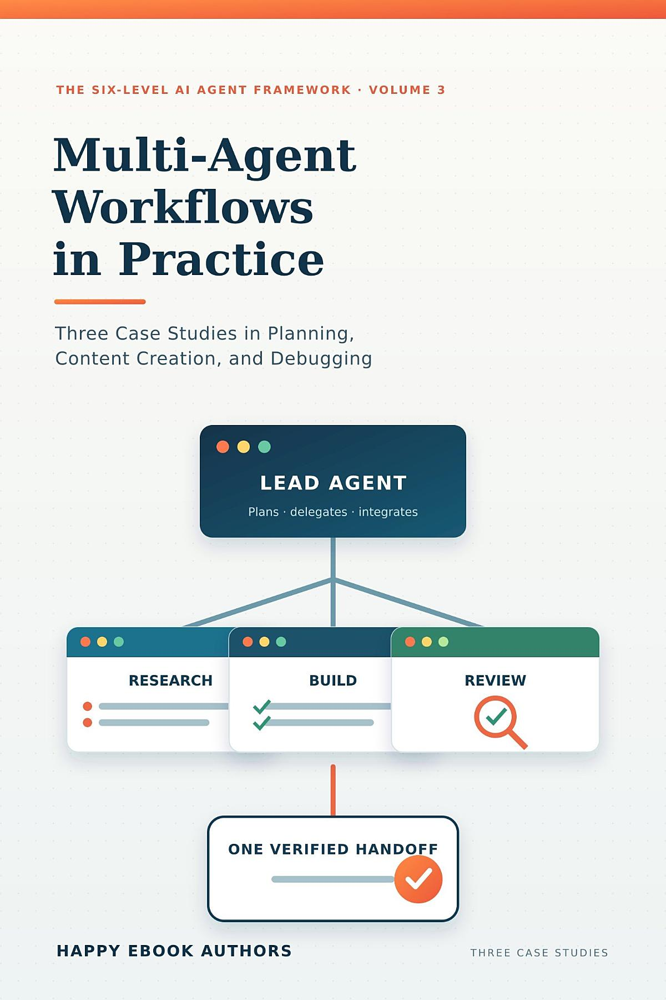

Multi-Agent Workflows in Practice
Three Case Studies in Planning, Content Creation, and Debugging

Multi-Agent Workflows in Practice
Three Case Studies in Planning, Content Creation, and Debugging
More agents do not automatically make a task easier or safer. Multi-agent work succeeds when responsibilities are distinct, handoffs carry the right inputs, and a person can verify what was—and was not—completed. Multi-Agent Workflows in Practice teaches a repeatable collaboration process through three case studies: Travel planning — parallel research and integration, with fictional figures and reminders to verify dates, schedules, availability, and costs before making real plans. Python course creation — a staged handoff from instructional design to code and learner review, using synthetic files and a reported test suite. Search bug fixing — reproduce a blank-query failure, add a regression check, make a focused fix, and review the result. The evidence is module-level, not proof that a website interface was fixed. The book also covers task decomposition, role boundaries, dependencies, stop conditions, CLI workspace preparation, multi-tab handoffs, acceptance checks, and a capstone planning exercise. It distinguishes a plan, a simulated artifact, a reported test, and a verified result instead of treating agent prose as completion evidence. The examples use Bash on Ubuntu/WSL, Python, and Node.js. Companion exercises are a separate download; files without a visible redistribution license are not bundled.